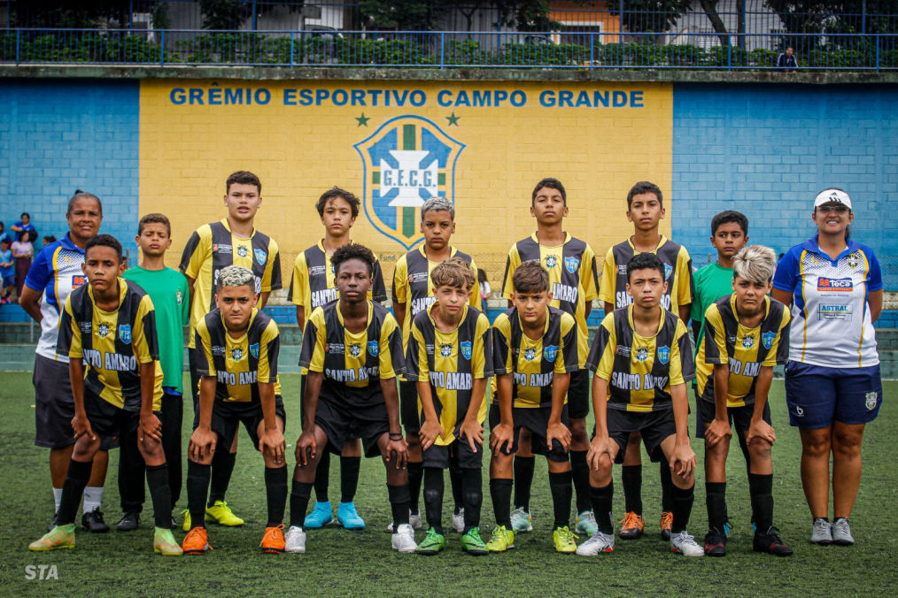
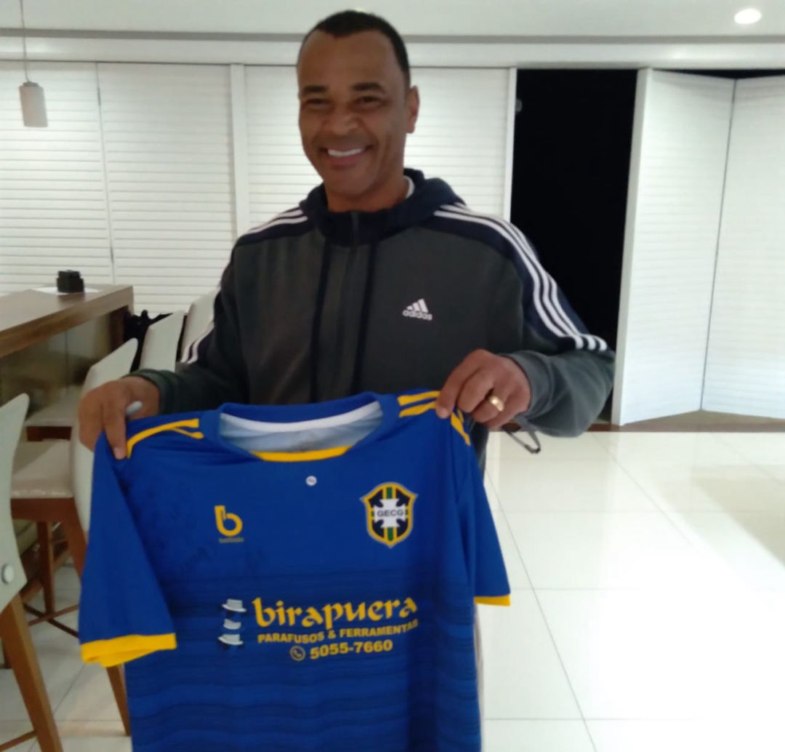
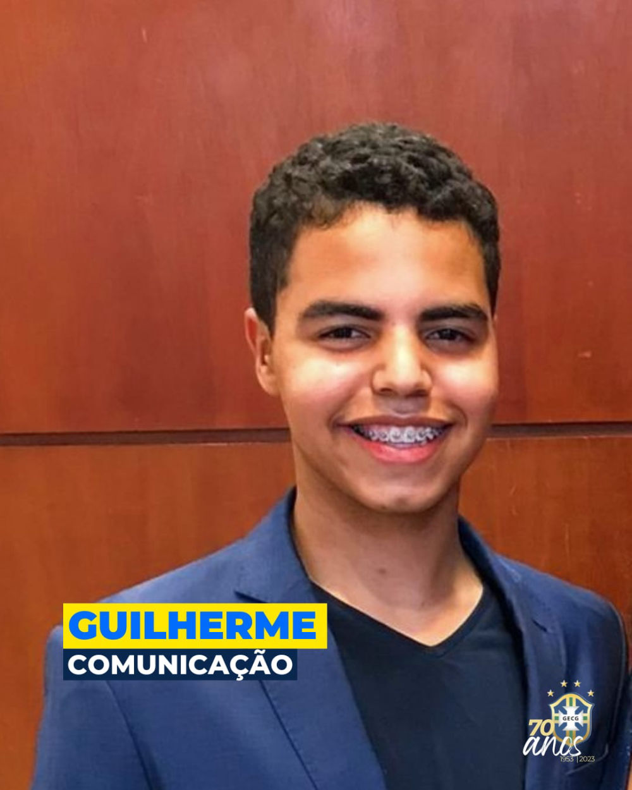
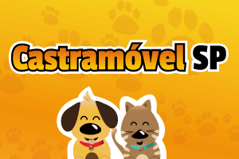
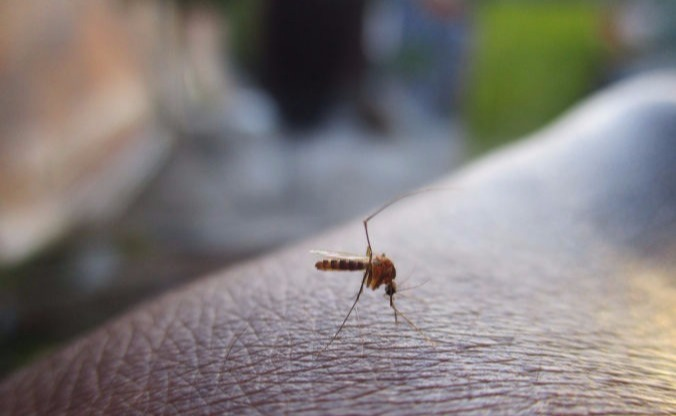

Erenilde
Administração

Desde 1953 em Campo Grande
Esporte, história e comunidade.
O Grêmio Campo Grande e o CDC Maria Felizarda da Silva criam oportunidades para crianças, jovens, adultos e idosos.
0
início da nossa história
Campo Grande
São Paulo — SP
Como chegar
Nossas atividades
Esporte para diferentes fases da vida
As principais atividades do Grêmio e do CDC reunidas em um único lugar. Cada cartão leva para o conteúdo correto.


Nossa estrutura
Um clube construído junto com o bairro
O espaço cresceu desde os tempos da várzea e hoje recebe treinos, jogos, atividades orientadas e encontros da comunidade.
- Campos sintéticos Espaços para futebol society e campo oficial.
- Área de ginástica Ambiente para aulas, treinos e apresentações.
- Convivência Estrutura próxima das famílias e da comunidade.

Memória do clube
Cafu nos deu a honra
O capitão do pentacampeonato visitou o Grêmio Campo Grande. Um encontro especial com um dos maiores laterais da história do futebol brasileiro.
Conhecer essa históriaGECG Store
Vista as cores do Grêmio
Uniformes e acessórios oficiais em um catálogo simples. Consulte tamanhos, valores e disponibilidade diretamente pelo WhatsApp.
Abrir catálogo
Nossa equipe
Pessoas que cuidam do clube

Guilherme
Comunicação
Luciana
Professora
Wallaci
Professor
Agenda e informação
Eventos, festas e notícias
Acompanhe atividades do clube e informações de interesse da comunidade.
Eventos e festas
Próximos encontros do Grêmio
Consulte o clube para saber sobre festas, apresentações e atividades abertas à comunidade.
Consultar agendaInformações sobre vacinação

ComunidadeCastração de animais pela Prefeitura

PrevençãoTodos contra a dengue
Galerias
Momentos que contam nossa história


Fale com o clube
Quer participar ou conhecer o espaço?
Consulte inscrições, horários, eventos e produtos da GECG Store.